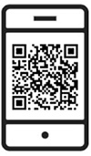

윤리경영
기업의 사회적 책임을 다하며 정도경영의 길을 추구해 왔습니다.
윤리경영, 투명경영으로 신뢰받는 기업
투명하고 공정한 경쟁과 타인을 배려하고 존중하는 가치를 기반으로, 고객, 협력업체, 공동체 등 모든 이해관계자와 더불어 함께 성장하고 발전하겠습니다.
반부패 신고센터
당신의 소중한 신고가 더욱 청렴한 무림을 만듭니다.무림 임·직원의 부정/비리행위 등을 직접 또는 간접적으로 경험하였거나 다른 경로를 통해 인지하고 있는 경우, 무림 「반부패 익명 신고센터」로 적극 신고해주시기 바랍니다.
반부패 익명 신고센터 바로가기- 신고대상
- 계약 또는 거래상 지위를 이용한 재산상 이익 요구 행위
- 계약 또는 거래상 지위를 이용한 경영간섭 등 부당한 요구(일명 갑질) 행위
- 공정거래법 또는 하도급법 등 관련 법률을 위반하는 행위
- 기타 불공정 또는 반윤리적 행위 등
- 신고방법
- 무림 홈페이지 [반부패 익명 신고센터] 배너 클릭 → 기업명 검색 → 신고서 작성
- 네이버 검색창 '소통핫라인' 검색 → '소통핫라인' 홈페이지내 [신고서 작성] 배너 클릭 → 기업명 검색 → 신고서 작성
- 
- 기타
- 모든 신고는 외부전문기관(법무법인 지평)을 통하여 접수되어 익명성을 철저히 보장합니다.
- 신고사실에 대한 확인조사를 통하여 적절한 조치를 즉시 시행합니다.